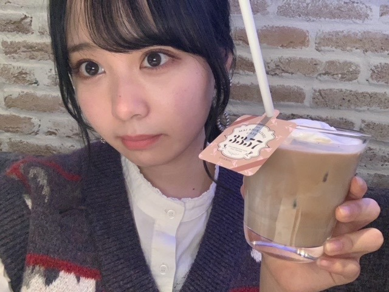

2020/1114Sat温かさ2倍。佐藤璃果
こんにちは~
乃木坂46 (新)4期生 岩手県出身
佐藤璃果です


白石麻衣さんのコラボカフェに
行かせて頂きました！⸜( •⌄• )⸝
何故かフラッシュがたかれてしまいました。
私はこちらのカフェラテを頂きました。
皆さんも是非！行ってみてくださいね
行った方は何を食べたのかとか感想を
書いてくださると嬉しいです。
私このカフェラテを飲むまで、
1日カフェインを摂取していなかったので、
余計に美味しく感じました。
上に乗っているホイップクリームのクリーミーさがとても相性が良くて美味しかったです。
☺︎

向かい側はカレーを
食べるさくちゃんでした。
沢山写真撮っちゃいました₍ᐢ.ˬ.ᐢ₎
沢山お話出来て嬉しかったです。
緊張して質問攻めしてしまったけれど
色々知れて嬉しかったです。
お話出来て幸せでした~
カレー好きな共通点発見です。
カレーを美味しそうに食べていました。
写真を撮る時だけ透明な
カバーをピラッとさせて頂きました。
そして！

あやめんとマネージャーさんに
撮って貰ったのです！
｢おはようでやんす｣と言ってくる
あやめん可愛いです~❅*॰ॱ
~~~~~~~~~~~~~~~~~~~
そして、11月12日、｢のぎおび｣
ありがとうございました。
次は緊張しないで出来るといいなぁあ。
皆さんとコミュニケーションが取れて
とてもとても嬉しかったです。
高山さんからの宿題も嬉しかったです。
いつか高山さんに、私に似合う髪型を教えて欲しいです( ˊ꒳ˋ ) ᐝ
桃子さんは麦茶が好きなんですね！
素敵だぁ、
~~~~~~~~~~~~~~~~~~~
11月10日、阪口珠美さん
❁お誕生日おめでとうございます❁
オシャレで立ち姿から綺麗な珠美さん！
ダンスもしなやかで綺麗で...素敵です。
この間、撮影の際に、その衣装可愛い~！
とサラッとお話して下さったことが
とてもとても嬉しかったです︎︎︎︎︎☺︎
たまたま、私と珠美さんと久保さんで
少し同じになった時に、
同い年だもんね！と話してくださって...
珠美さんが私を同い年だと認識してくださっていた事が嬉しかったです！
これからお話出来たら嬉しいです！
素敵な一年になりますように。
~~~質問~~~
〇乾燥肌に悩んでいるけど、良い対策はあるかな？
一緒にパック返ししましょー
〇ベロアと言えば額縁衣装ですが（？）、璃果ちゃんは着てみたい衣装ってありますか？
確かに！！
期待衣装たくさんあるなぁ、、、
額縁衣装も憧れですきです。
〇最近ハマってる飲み物とかはありますか？？
相変わらずコーヒーと
レモン水です。
〇らじらーに出る時に意識してやったこととかある？？
声を小さくならないようにすることと、
表情が見えないので、明るい声をより意識
受け身にならない
などなど色々です。
聞いてくださってありがとうございます。
まだまだ課題が沢山です...
〇年越しの瞬間ってなにしてるの？
普段なかなか会えない他校のお友達と
一緒に神社に行くの！
初詣！
〇好きなパンはありますか？
デニッシュ、
タルト、キッシュ(パンでは無いかも、、)
塩パン、、、、、、etc
〇昨日のらじらーすごく話すの上手いなぁって思ってんですけどお喋りは好きですか？
全然上手くないですよ！
でも今まで上手く話せなくて後悔ばかりだったので少しでもそう思って頂けたら幸いです。
好きです。
〇褒める時のコツはなんですか？
この人いい人素敵な人って
思うこと
〇璃果ちゃんは癖っ毛？元からまっすぐ？？
まっすぐです！
〇質問！俺も東北出身なんだけどいつか握手会が始まったら東北弁で話しかけてもいい？笑
話してけらい~！
〇りかちゃん的に初めましての人とかと楽しくお話できるコツとかありますか？？
私は、食の話しがちです。
あとは、地元のお話をお互いにします！
~~~~~~~~~~~~~~~~~~~
明日はるなぴです。
るなぴは偉いよ~~
~~~~~~~~~~~~~~~~~~
皆さんにとって
素敵な1日になりますように。

またね。
好きな卵料理はなんですか？
私はゆで卵＋塩
#41 りか

PROFILE
新4期生リレー
202104
| SUN | MON | TUE | WED | THU | FRI | SAT |
|---|---|---|---|---|---|---|
| 1 | 2 | 3 | ||||
| 4 | 5 | 6 | 7 | 8 | 9 | 10 |
| 11 | 12 | 13 | 14 | 15 | 16 | 17 |
| 18 | 19 | 20 | 21 | 22 | 23 | 24 |
| 25 | 26 | 27 | 28 | 29 | 30 | |

コメント(282)
カフェって居るだけであたたかくて心地いいよね
この前ののぎおび！癒された…
髪型どれが好き？って聞かれてたけど正直選べないなあ
全部いいんだもんなあ(優柔不断)
choose 5 photoで璃果ちゃんの写真あるね！
衣装が綺麗で、届くのが楽しみだー
4期生ライブのレッスンとか、お仕事とか、大変なこともあるかもしれないけれど、ずっと応援してます！
体にお気をつけて。
璃果ちゃんを色んなところで見ることができて、最近幸せです(*´︶｀)
素朴な疑問(質問)
璃果ちゃんくらい目が大きいと、コンタクト乾いてしょうがないと思うんだけど、どうケアしてる？いい目薬とか？(なにそれ)
今日も朝から焼き芋を食べようと思いながら、食欲の秋という言葉に甘えてカツ丼食べました（）
ノギザカスキッツ！ACT2の♯2が放送されましたね！
与田さんのイチゴキャラ…りかちゃんはマスカットで登場ですかね…（勝手に決めるなしょげるな…以下略）
今日の誕生花は「スターチス」
花言葉は、変わらぬ心・途絶えぬ記憶
100年先まで記憶に残るりかちゃんに少し重ねて見てしまいました…
りかちゃんを応援したいという気持ちが変わらないこと、ここに誓っておきます（なぜ）
そんな話はさておき。
今日も1日頑張りましょう！（無理矢理感）
また書きますね。
またね！
めっちゃ楽しみだね❗️
りかたんも出て欲しいな〜
璃果ちゃんこんにちは！
コラボカフェ行きたいんですけどテスト近くて行けなさそうです泣
さくらちゃんとあやめちゃんと一緒に行ったんすね
想像するだけで癒されます♡
質問失礼します
○璃果ちゃんのクリスマスで特に印象に残ってる思い出があったら教えてください
それでは！
僕的にはこれも立派な卵料理だと思います
今日は19:00〜掛橋ちゃんの瑠奈ちゃんの猫舌ですね！
りかちゃんの名前が出てくるかな…？
楽しみですね…！
今日は最近聴いてる曲をオススメします！
Mr.Children 「GIFT」「Sign」
GReeeeN「UR not alone」
この3曲です！
Mr.Childrenさんは心が辛くなった時に
GReeeeNさんは気持ちを高めたい時に聴いてます…！
りかちゃんは歌詞から曲に浸る派、それとも音程（リズム）から曲に浸る派、どちらですか？
自分は圧倒的に歌詞からなんです…
色々なことと重ね合わせると、心に響いてくるんです。
音楽の力は偉大ですね…！
明日はブログ更新日ですね！
また書きます！
またね。
4期のみんなで、色んなとこ行ったり仲良くしてるのを想像するだけで穏やかな気持ちになれます！
黒のスカートと靴めっちゃ可愛いです！！
~質問~
〇肉まんか、あんまんか、ピザまんどれが1番好きですか？？
〇ひなこいが配信されましたが、璃果ちゃんはやりますか？？
僕は最近学校の帰りにあんまんがものすごく食べたくなって、たまに買って帰ります。それを食べてる時がほわほわって気持ちになってこれが幸せなのかぁ〜って思っています笑
僕もゆでたまごに塩が1番好きです！今日もゆでたまごをお昼に食べました〜
次の更新も楽しみにしています！応援してます！！
良い1週間を！！
毎回ブログ楽しみに見ています‼
まいやん(白石麻衣さん)のコラボカフェいんたんだね♥いいなぁ〜。見ていて行ってみみたいです。
さくらちゃんのカレーライスを食べる姿とても美味しそうで可愛らしいですね♥璃果ちゃんのカフェラテコーヒー飲む姿とても似合っていて可愛いね♥
乃木坂46 26枚目選抜メンバー発表おめでとうございます‼26枚目シングルのタイトル名楽しみです‼
ノギザカスキッツACT2(シーズン2）見たよ‼
3期生＆4期生の演技とても見ていて楽しく魅力的です。璃果ちゃんの演技楽しみにしています♥
璃果ちゃんのブログから優しい言葉や希望のある言葉を沢山頂いているおかげで毎日頑張ろうという気持ちをもつことができます‼璃果ちゃん大好き〜♥
いつも長文で丁寧にブログを更新してくれてありがとう〜♥これから璃果ちゃんの活躍に期待しています‼ずっと応援しています‼寒くなってきているので体調にきをつけてね。璃果ちゃんにとって素敵な1日でありますように♥次回のブログ更新楽しみにしています‼コメント送信遅れてしまってすみません。
〜質問〜
○クリスマスといえば何を思い浮かべますか？
○大晦日の思い出を教えてください
璃果ちゃん、こんばんは！
ブログ更新ありがとうございます。
まいやんカフェ行ってたんですね
しかもさくちゃんとあやめんと！！
同期と仲良くなってるの、とても嬉しいです
さくちゃんがカレー好きなの知らなかったです。
いつかカレー屋さん巡りとかできたら良いですね！
ちなみに、さくちゃんの好きな飲み物が「水」ってご存知ですか？？
璃果ちゃんと同じですね
のぎおびも最高でした！！
幸せな30分でした(*^▽^*)
地元に璃果ちゃんのことを紹介してくれてるラジオがあるって璃果ちゃんが言ってたことに璃果ちゃん推し一同テンションが上がっておりました！
早速そのラジオに、らじらー出演の件と、のぎおびの件おたより送りました
今でも璃果ちゃんのこと紹介してくれてるんですよ(^^♪
最後に質問良いですか？？
〇璃果ちゃんのことを紹介してくれてるラジオってFMあすもさんのことですか？？
〇掛林の猫舌SHOWROOMはご覧になりましたか？？
〇先日、岩手県に一人旅に行ってきました。人が優しくて、料理が美味しくて、紅葉が綺麗で、楽しい場所でした(^^♪
それではブログ更新お疲れ様でした。
璃果ちゃんの毎日が楽しく笑顔に溢れたものでありますように！！
まこと
特にファミレスのやつは卵がふわとろでめっちゃ美味しくて大好きです！
またしても色々バタついていて、こんなタイミングでのコメントになってしまいました…
バタついていますが、のぎおびもバッチリ観ましたよ！
最高の癒やしでした♪
今回も幸せな時間をありがとうございました♪
好きな卵料理は目玉焼きです。
揚げ焼きにして周りカリカリ黄身は半熟にするのが好きです！
それと地元の昔ながらの洋食屋さんのオムライスです。
卵がふわふわで切れ目を入れて開くと絶妙な半熟加減でトロトロっとしてビジュアルも味も最高な定期的に食べたくなるオムライスです！
オムライスは昔ながらの薄焼き卵で包まれてる派とふわとろオムレツが乗せてある派どちらが好きですか？
璃果さんがいつも笑顔溢れる日々を過ごせますように！
またね！
ぺろぺろー
遂にドラマ｢だから私はメイクする」が最終回を迎えてしまいましたね(´；ω；｀)
毎話勉強になるようなドラマでした。
-------❁ ❁ ❁-------
白石麻衣さんのカフェ！
遠藤さくらちゃんとお話出来て良かったですね！
4期生皆で行ったのかな？
さくらちゃんとはまさかのカレー好き仲間ฅ( ̳> ·̫ < ̳ฅ)！？
筒井あやめちゃんの挨拶も癒されますね٩(*´︶`*)۶
-------❁ ❁ ❁-------
のぎおび！
高山一実さんが書いてくれたボードを持って帰りたい！と言っていましたが持って帰りましたかヾ(*>∀<)ﾉﾞ？(笑)
色んな髪型をするために髪を下ろしてきたりかちゃんが素晴らしすぎて100000回は拍手しました！(笑)
-------❁ ❁ ❁-------
質問コーナーの答えを見てるとちょっとりかちゃんのことを知ることが出来た気がして嬉しくなります。
私は上手い質問が浮かばない(ﾉω`)(笑)
〇元気を出す時に食べるものはありますか？
-------❁ ❁ ❁-------
私はだし巻き玉子が好きです♪
明日もりかちゃんにとって素敵な一日になりますように❁⃘*.ﾟ
今日は42回目のブログ更新日ですね…！
乃木恋アプリがセブンイレブンさんとコラボしてますが、りかちゃんがオススメな新商品はありますか？
今日も1日頑張りましょう！
またね！
おはよう
ブログありがと
ステキな服だねー
りかりんはこういうスタイルは無敵だな！！
ほんと良きセンスや！
マイヤンカフェ楽しめたようだね
おさくにおつつ
ショットありがとー！
おつつからのもばめでも
やんす
きてましたよん(^^)
たくさん交流して
またいろいろなエピソードきかせてねー
ノギスキact2も楽しみにしています
しーちゃんとの共演も待ち遠しい！
4期ライブもひさびさ
りかりんのパフォーマンスたのしみでしょうがない(^^)
ではでは
金曜日はりきってまいりましょーー！！
ヽ(´▽｀)/
ブログ更新ありがとうございます
白石さんのYouTubeチャンネルでメニュー動画みたりしてむちゃくちゃ美味しそうだなぁって思ってたですけど、カフェラテもカレーもむちゃくちゃ美味しそうですね
さくらちゃんと一緒にご飯食べる時間があってたくさ話もできて色々知れてさくらちゃんとの距離が縮まりましたね
おはようでやんすと言ってくれる可愛いあやめちゃんとゆっくりお話出来る時間はありましたか？
そして、のぎおびお疲れ様でした
たくさんコメント気にかけてくれてて
緊張してるよりはリラックスしてるなぁって思ったので緊張を表に出さないようにみせないようにできるようになりましたね
りかちゃんすごい！！
好きな卵料理は卵焼き×ケチャップです
ゆで卵×塩もいいですよね
りかちゃん今日も一日お疲れ様でした
明日も楽しい一日にしましょうね
コメントする